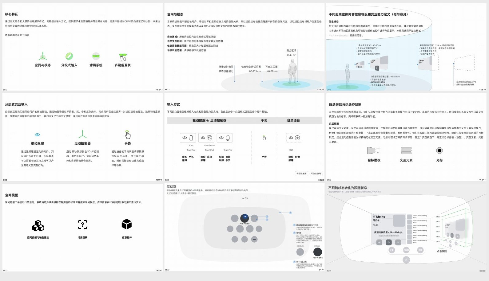
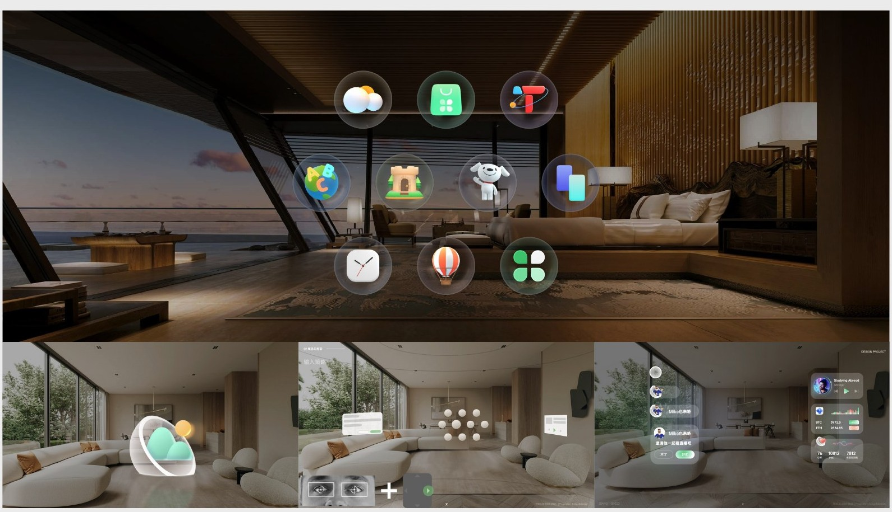
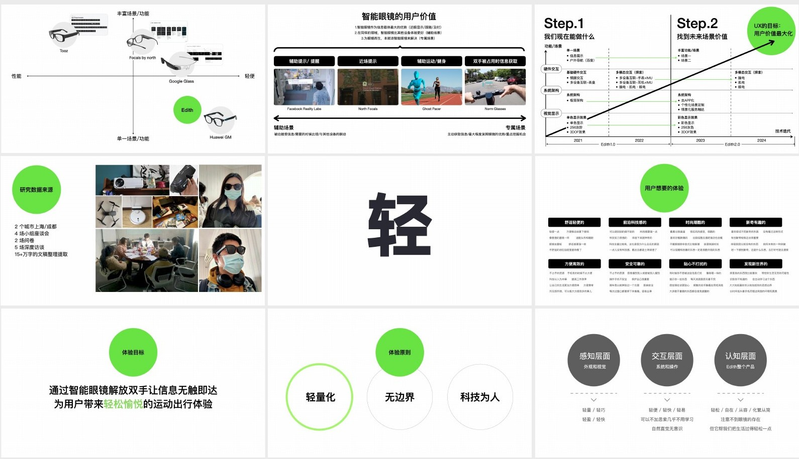
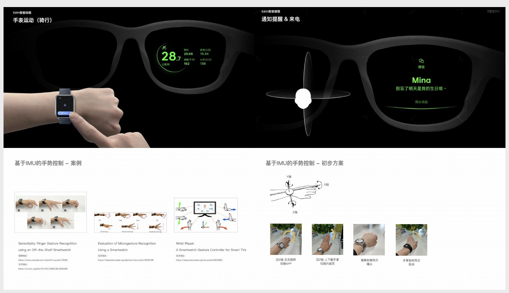
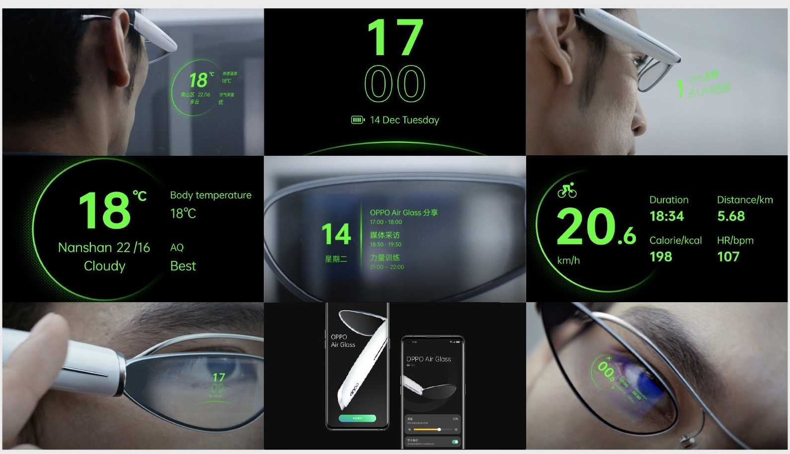
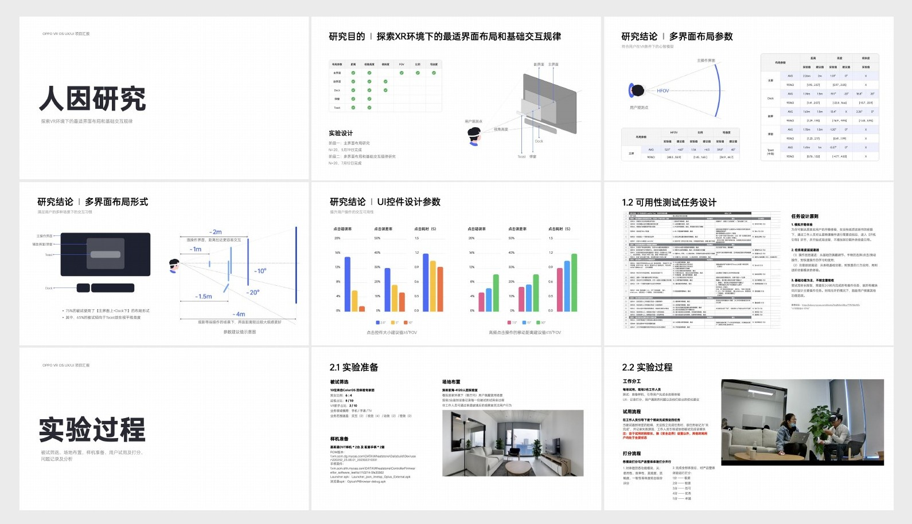
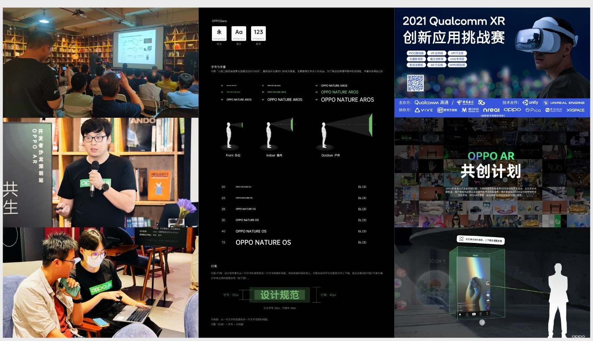

01 / FUTURE INTERACTION
OPPO XR
探索未来交互范式
从 AR Glass、Air Glass 到 MR Glass，将空间感知、轻量化信息和沉浸式体验转化为可理解的交互系统。
- 时期
- 2020—2024
- 职责
- 交互设计总监 · 用户体验与团队管理
- 范围
- 交互架构 / 用户研究 / 空间 UI / 体验验证

01
从界面走向空间
当界面进入真实环境，设计需要同时处理人的位置、信息距离和输入方式。空间本身成为交互的一部分。
AR Glass 的设计框架将安全区域、自然交互区域、信息读取范围和场景识别范围分别定义，并把眼动、运动控制器、手势与语音纳入输入体系。
关键取舍是让不同任务匹配合适的输入：既发挥眼动定位的效率，也通过控制器完成明确操作，降低单一输入方式带来的限制。

02
让空间规则成为可使用的界面
从抽象的交互规则到可见的操作，需要建立稳定的信息组织与层级。应用入口、内容面板与操作反馈共同构成用户对空间系统的理解。
界面方案把内容放入可理解的空间关系中。视线、目标与反馈之间保持连续，让用户能够从“看见”自然过渡到“操作”。

03
轻，不只是硬件重量
智能眼镜需要回答一个更日常的问题：为什么用户愿意把它戴在身上？研究从已有设备、使用场景和用户体验出发，寻找轻量设备真正有价值的任务。
作品集记录了上海、成都两地的小组讨论、问卷与深度访谈。体验目标聚焦解放双手、让信息无触即达，为运动与出行带来轻松的辅助体验。
“轻量化、无边界、科技为人”被进一步落实到感知、交互与认知三个层面：减少视觉负担、操作负担和学习负担。

04
围绕佩戴情境组织输入与信息
佩戴式设备的交互发生在移动、交流与日常任务之中。输入方式需要与身体状态和注意力条件相适应。
方案探索手表、眼镜与手机之间的协同，把即时信息获取与更完整的管理操作分配到不同设备。眼前显示承担轻量提示，其他设备补充输入与控制。

05
让信息一眼可读
有限的显示空间要求信息有清楚的优先级。时间、天气、导航等场景采用简洁的视觉结构，让关键内容能够被快速辨认。
设计的重点是明确当前任务需要什么信息，并控制同一时刻呈现的密度。图形、数字与短文本围绕阅读效率组织。

06
用人因研究校准沉浸体验
MR 的多界面体验不仅涉及视觉风格，还涉及舒适的观看距离、视角、控件尺寸与操作效率。
研究围绕主界面、Dock、Toast 等层级展开，记录不同布局和控件参数下的点击错误率与耗时，将实验结果转化为界面布局和基础交互的设计依据。
从任务设计、被试筛选、场地与样机准备，到测试记录和问题分析，研究过程为沉浸式体验提供了可验证的迭代路径。

07
从产品体验到开发者生态
新的交互平台需要可被理解和复用的规则。设计工作延伸到开发者交流、体验演示和应用探索，让平台能力与真实场景相遇。
这组项目的价值在于建立一套贯穿研究、交互定义、界面设计与验证的工作方法。Air Glass 获得 2023 年美国爱迪生奖与 iF 设计奖；相关工作也形成了 AR 技术白皮书交互内容与专业分享。
图文依据：LIYOU PORTFOLIO 2024，第 12—29 页；职责与荣誉依据个人简历。
NEXT / 腾讯听听 ↗